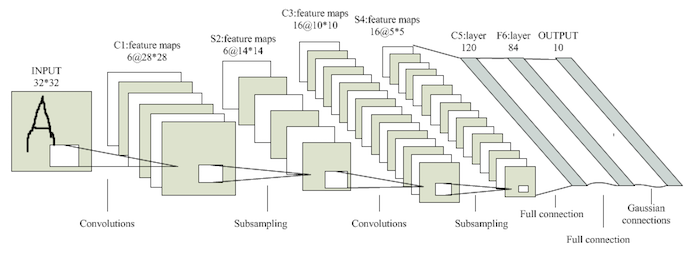
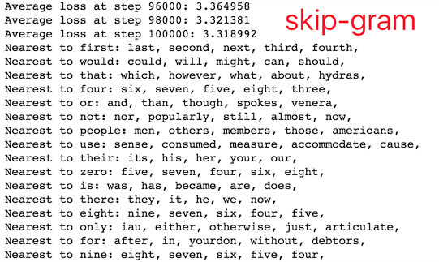
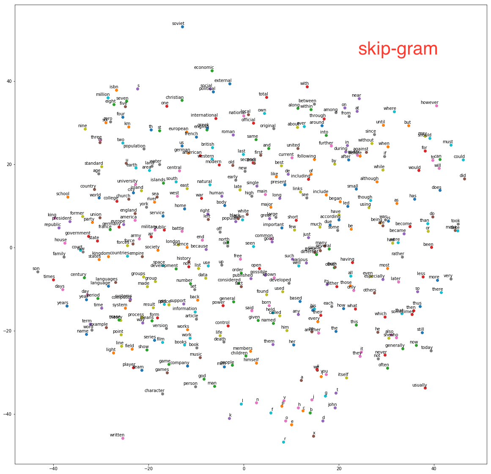
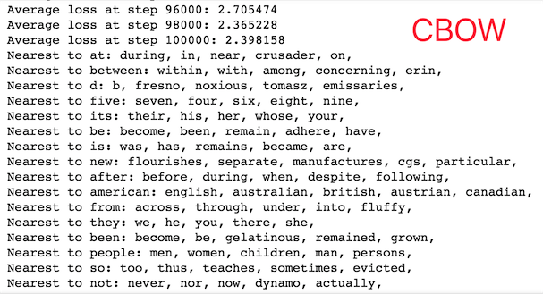
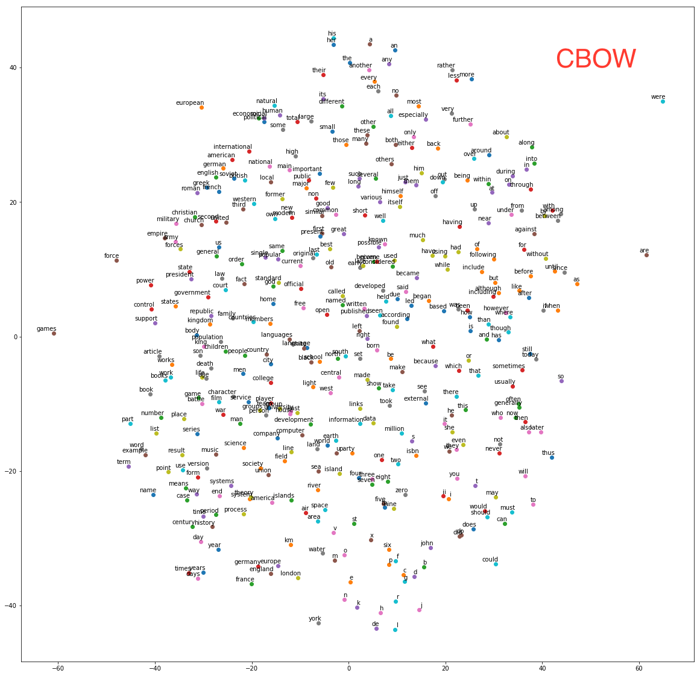

deep learning入门公开课 课程链接的课堂作业，类似于TensorFlow的教学实践，总共分为三部分：首先是环境的搭建及TensorFlow的基本介绍；其次是手写字母识别（比手写数字识别数据集MNIST要困难一点），前后使用了线性模型、NN、DNN、CNN模型。最后两个任务是在维基百科数据集上做词向量表示和序列学习，分别使用了word2vec和LSTM算法。TensorFlow是个通用性很高的框架，通过图的形式定义网络结构及运算流程非常清晰易懂，提供的算子也越来越丰富，感谢前人造的轮子。
这里简单记录下完成作业过程中遇到的一些问题，前期还是比较坎坷的，后面就比较通畅了，详细代码存放在我的Github项目中。
0.环境搭建
- 安装Homebrew、python、pip、docker、jupyter notebook
- 尝试了docker和pip两种方式安装TensorFlow。docker library的网站被墙了，可以直接在某网站下载了镜像然后load到docker中,也可以按照readme里的流程使用教学docker镜像（ipynb文件同时下好，貌似也会被墙）。最后选择了直接本地安装运行
- 使用pip安装scipy、sklearn时会特别慢，换成豆瓣的源后速度特别给力。
pip install sklearn -i http://pypi.douban.com/simple --trusted-host pypi.douban.com酱紫 - Assignment的要求以ipynb文件的形式放在GitHub上，可以通过官方文档或者极客学院翻译的TensorFlow 官方文档中文版了解一下TensorFlow的基本概念及原理：
- 使用tensor表示数据.在Python中,返回的tensor是
numpy ndarray对象 - 使用图(graph)来表示计算任务.图中的节点被称之为op(operation). 一个op获得0个或多个Tensor执行计算, 产生0个或多个Tensor
- 在被称之为会话(Session)的上下文中执行图.会话将图的op分发到诸如CPU或GPU之类的设备上,同时提供执行op的方法并返回产生的Tensor
- 通过变量(Variable)维护状态(计数器等)
- TensorFlow还提供了feed机制, 该机制可以临时替代图中的任意操作中的tensor可以对图中任何操作提交补丁,直接插入一个tensor
- 使用tensor表示数据.在Python中,返回的tensor是
1.notMNIST
notMNIST是升级版的MNIST，含有A-J10个类别的艺术印刷体字符，难度大于手写数字识别。这个assignment主要用于处理数据。
- 下载：assignment里提供的地址挂了，可以在官网上直接下载。
- 格式转换：解压后判断每张图片的尺寸是否合规，剔除不合法图片,然后将数据转化成3维数组的形式存储。
- 归一化：提供的代码对像素值进行了归一化，但是新下载的数据貌似已经做过归一化了，所以重复归一化会导致所有像素值几乎相同无法进行后续学习（准确率一直是10%，坑了好久），这个要根据解析后的标准差确认一下（之前的标准差只有0.01，对此产生了一点怀疑，然后顺藤摸瓜找到这个问题）。
- 验证：使用pyplot将图像展示出来，参见Pyplot tutorial
- 存储：将数据集随机划分为训练、测试、验证集，以pickle文件的形式进行存储。pickle模块将对象转化为文件保存在磁盘上，在需要的时候再读取并还原。
- 训练：使用Logistic Regression做简单的训练，观察不同训练样本数量对预测准确度的影响。
2.fullyConnected
样例中给出了如何使用TensorFlow构建一个多分类的逻辑回归：首先在graph中定义计算过程，然后在session中运行这些op。然后我们参照这个流程构造一层的NN网络，使用ReLu作为激活函数。使用miniBatch随机梯度进行训练，因此训练数据不是一个特定的值，而是占位符placeholder，在TensorFlow运行计算时通过feed机制输入这个值。使用batch训练的LR测试集准确率为85.9%，1-layer NN达到91.1%
3. Regularization
- Problem 1：分别对之前训练的LR和NN模型增加了L2正则项
- Problem 2：为了验证正则的作用，在极小的数据集（1024）下反复迭代训练。观察到在没有正则的情况下，训练集的准确率很快收敛到了100%但是测试集准确率只有80.3%；增加正则项后训练集准确率迅速在85%处收敛，测试准确率86.3%。
- Problem 3：依然使用极小数据集，在隐层后面增加一个dropout层（但是要注意这个dropout层只有训练时用预测时不用），
keep_prob设为0.5。 - Problem 4：尝试更加复杂的网络（1024*256*64）,并使用learning rate decay, 效果显著。dropout和L2都没有取得预期的效果，可能是数据充足不存在太严重的过拟合现象吧。
| L2 | Dropout | 小数据集 | 大数据集 | 3层网络 |
|---|---|---|---|---|
| 无 | 无 | 80.3% | 91.1% | 96.5% |
| 有 | 无 | 86.3% | 91% | 96.3% |
| 无 | 有 | 87.1% | 90.8% | 94.4% |
| 有 | 有 | 88% | 90.8% | 94.4% |
4.Convolution
Convolutional Network
首先我们要学习使用卷积函数，在TF中的调用函数为：tf.nn.conv2d(input, filter, strides, padding)，几个参数的含义依次是：
- input：输入图像，一个维度为[batch, height, width, in_channels]的tensor。
- filter：CNN中的卷积核函数，维度为[filter_height, filter_width, in_channels, out_channels]的tensor，这个tensor是我们需要学习的表 示。这里的in_channels应该与input中的in_channels一致。
- strides：做卷积时每一维的步长，是一个长度为4的一维向量。
- padding：填充方式，有”SAME”或”VALID”两种选择，区别在于卷积矩阵移动到图像之外时是否填充。
假如我们是有16个5*5的filter，out_chanel为16，步长设为[1,2,2,1]，SAME padding。则128*28*28*1的原始图像经过卷积处理后变为128*14*14*16。
这里给出的例子构造了conv(2*2)+conv(2*2)+fc(256)的网络结构，经过1000轮迭代后准确率为91.3。pooling
接下来，我们要学习一下pooling的使用，池化是一个subsampling的过程，相当于降维，常与1*1的卷积配合使用。调用函数为tf.nn.max_pool(value, ksize, strides, padding)。其中ksize为窗口大小，是一个长度为4的一维向量，strides和padding的含义同上。在使用了16*conv(1*1)+max_pooling(2*2)+16*conv(1*1)+max_pooling(2*2)+fc(256)后，准确率提高到92.3%（1000轮）
LeNet-5
手写字母识别的最后一个任务是学习经典的CNN网络结构LeNet5。
其中的优化点没有仔细研究，照猫画虎构造了一个8*conv(1*1)+max_pooling(2*2)+16*conv(1*1)+max_pooling(1*1)+fc(256)+fc(64)的网络，增加L1正则后准确率达到94.8%（1000轮）,dropout依然没有取得正向效果。充分学习后准确率只有95.3%，不如裸的DNN，看来DL的调参学问果然是深不可测的玄学，以后有机会再继续调一下。
|
|
5.word2vec
使用Text8(维基百科预料)训练词的向量表示，已经给出了skip-gram算法的实现。
- 首先对数据进行处理，用默认编码代替低频词。
- 根据
batch_size,num_skips（每组数据采样的数量，随机不重复）,skip_window（每组数据目标单词两边的样本长度）进行采样。每组数据采样完成后窗口向后移一位，共移动batch_size/num_skips次。 - 用128维的向量表示每个单词，共有N*128个embedding和weight，以及N各bias。
- 由于这个多分类问题共有N个不同的label，因此训练时采用
sampled_softmax_loss随机选取若干个（64）个负例计算loss。 - 使用；训练过程中随机选取16个预测最近邻观察效果。
 - 对于最终的embedding向量进行归一化，并使用sklearn中的T-SNE将高维向量映射到二维空间内观察相似度。

众所周知，word2vec有skip-gram和CBOW（continuous bag of words）两种实现算法，其中skip-gram是给出target预测所在上下文的其他单词，而CBOW是根据上下文单词embedding的和来预测target。因此CBOW只需修改skip-gram的batch sampling方法，并修改输入向量维度和loss函数即可。According to Mikolov:
Skip-gram: works well with small amount of the training data, represents well even rare words or phrases.
CBOW: several times faster to train than the skip-gram, slightly better accuracy for the frequent words
This can get even a bit more complicated if you consider that there are two different ways how to train the models: the normalized hierarchical softmax, and the un-normalized negative sampling. Both work quite differently.

在相同的训练轮数下，skip-gram的loss约为3.2，而CBOW的loss约为2.3。由于CBOW使用了多个上下文向量的平均，因此得到的结果也更加平滑一些，在本数据集下效果也更好一些。
